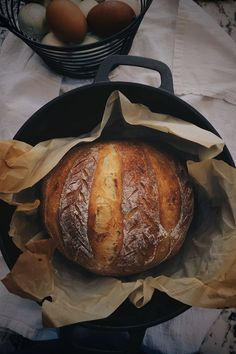
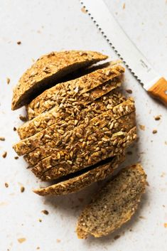

Our Breads

White Bread
Soft and fluffy white bread with a delicate crust, the perfect choice for sandwiches or breakfast toasts.
More

Farming Bread
Rustic farming bread with a rich grain flavor, crafted using traditional recipes.
More
Loaf Bread
A classic loaf of bread with a dense texture and balanced taste — the perfect companion to any meal.
More
Olive Bread
Infused with the aroma of Mediterranean olives, this bread is a great match for soups and appetizers.
More

Whole-Grain Bread
Packed with fiber and nutrients, whole-grain bread is your path to healthy eating.
More